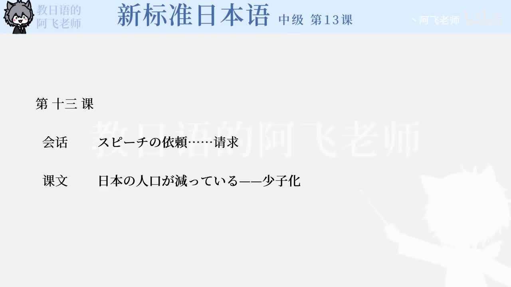

Bilibili P161 · Dialogue
スピーチの依頼：婚宴致辞的郑重请求
从“打扰上级”到“说明婚宴请求”，再到“接受请求”和“确认出席者”，训练正式请求、委婉说明、传闻与安排决定。
全篇听力精讲
按 14 句会话轮播。每句包含原文、平假名、中文、重点语法和结构拆解。
会话流程地图
进入话题お忙しいところ申し訳ありませんが
郑重请求折り入ってお願いしたいこと
接受拜托君の頼みだ。引き受けるか
出席安排出席してくれることになりました
逐句精读
语法速记
お忙しいところ请求前缓冲
在对方正处于某状态时打扰，常接「すみません」「申し訳ありません」。
折り入って郑重开场
用于重要请求或商量，提示接下来不是普通闲聊。
〜んですが委婉铺垫
说明背景并留余地，常用于请求、说明来意。
〜たいと思いまして委婉意图
把直接请求包装为“我这样想……”。
あまり〜ない程度否定
表示“不太……”，比完全否定弱。
もしかして猜测确认
表示“莫非、该不会”，常用于向对方确认猜测。
どうしても〜ない强否定
表示无论如何也不能/怎么也不。
〜そうです传闻
接普通形，表示“听说……”。
〜ことになりました安排已定
强调事情被安排/决定，不突出决定者。
何といっても强调理由
表示“不管怎么说，毕竟”，引出最重要理由。
核心词汇与搭配
练习与复习
来源说明：视频标题、时长、CID 和首帧来自 Bilibili 公开视频接口；课文依据本地新标日中级第13课「スピーチの依頼」会话数据整理。